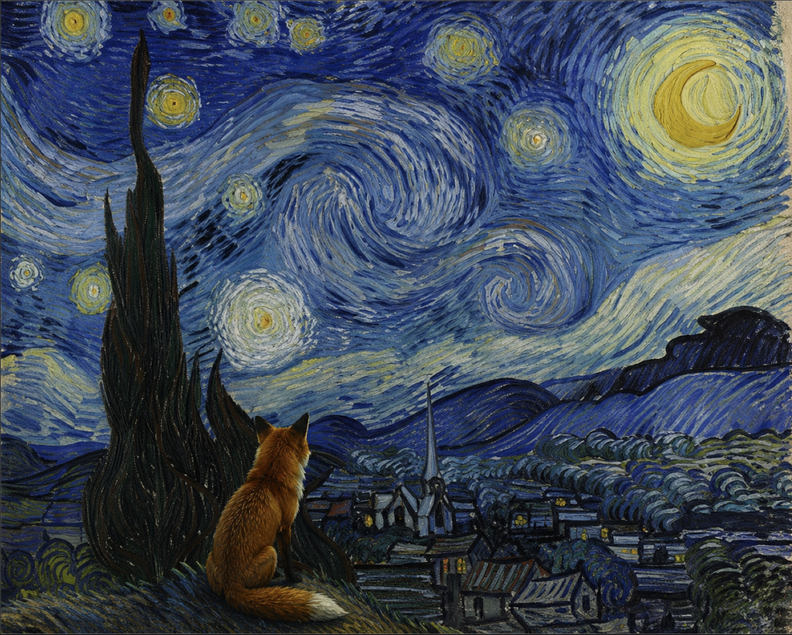

A

la nuit etoilee ,1889,van gogh
Le tableau représente ce que Van Gogh pouvait voir et extrapoler de la chambre qu'il occupait dans l'asile du monastère Saint-Paul-de-Mausole à Saint-Rémy-de-Provence en mai 1889

le Renard et la nuit vivante
La Nuit Étoilée est l'œuvre la plus célèbre de Vincent van Gogh et l'une des peintures les plus reconnue de l'histoire de l'art. Peinte en 1889 depuis sa chambre à l'asile de Saint-Rémy-de-Provence, elle représente un ciel nocturne tourbillonnant avec un cyprès majestueux et un village paisible. Sa pincelada densa et concentrique transmet mouvement, émotion et une vision du ciel nocturne qui continue de fasciner des millions de personnes dans le monde. L'œuvre originale est conservée au MoMA de New York.
tableau peint en 1889 pendant le sejour a van gogh a saint remy de-Provence . avec la technique de la peinture à l'huile sur toile. appartient au mouvement postimpressioniste. les touches de peinture sont epaisse et visibles du style van gogh.